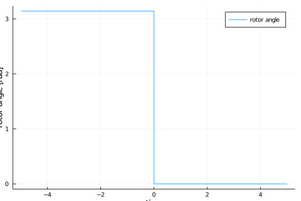

Quick Start Guide
You can access example data in the Power Systems Test Data Repository, the data can be downloaded with the PowerSystems.jl submodule UtilsData.
Loading data
Data can be loaded from a pss/e raw file and a pss/e dyr file.
julia> using PowerSystems, PowerSimulationsDynamics, Sundials, Plots
julia> DATA_DIR = download(PowerSystems.UtilsData.TestData, folder = pwd())
"/home/runner/work/PowerSimulationsDynamics.jl/PowerSimulationsDynamics.jl/docs/build/data"
julia> omib_sys = System(joinpath(DATA_DIR, "psse_raw/OMIB.raw"),
joinpath(DATA_DIR, "psse_dyr/OMIB.dyr");
time_series_in_memory = true)
[ Info: The PSS(R)E parser currently supports buses, loads, shunts, generators, branches, transformers, and dc lines
[ Info: the voltage setpoint on generator 1 does not match the value at bus 101
[ Info: the voltage setpoint on generator 2 does not match the value at bus 102
┌ Info: Constructing System from Power Models
│ data["name"] = "omib"
└ data["source_type"] = "pti"
[ Info: Reading bus data
[ Info: Reading generator data
[ Info: Reading branch data
┌ Warning: Rate provided for BUS 1-BUS 2-i_1 is larger than the SIL Inf in the range of (min = 134.0, max = 145.0).
└ @ PowerSystems ~/.julia/packages/PowerSystems/eF3Pv/src/utils/IO/branchdata_checks.jl:147
┌ Warning: Rate provided for BUS 1-BUS 2-i_2 is larger than the SIL Inf in the range of (min = 134.0, max = 145.0).
└ @ PowerSystems ~/.julia/packages/PowerSystems/eF3Pv/src/utils/IO/branchdata_checks.jl:147
[ Info: Reading branch data
[ Info: Reading DC Line data
[ Info: Generators provided in .dyr, without a generator in .raw file will be skipped.
┌ Warning: struct DynamicGenerator does not exist in validation configuration file, validation skipped
└ @ InfrastructureSystems ~/.julia/packages/InfrastructureSystems/6GZHV/src/validation.jl:51
[ Info: Machine at bus 101, id 1 has zero inertia. Modeling it as Voltage Source
System
======
System Units Base: SYSTEM_BASE
Base Power: 100.0
Base Frequency: 60.0
Components
==========
Num components: 11
9×3 DataFrame
Row │ ConcreteType SuperTypes C ⋯
│ String String I ⋯
─────┼──────────────────────────────────────────────────────────────────────────
1 │ Arc Topology <: Component <: Infrast… ⋯
2 │ Area AggregationTopology <: Topology …
3 │ Bus Topology <: Component <: Infrast…
4 │ DynamicGenerator{BaseMachine,Sin… DynamicInjection <: Device <: Co…
5 │ Line ACBranch <: Branch <: Device <: … ⋯
6 │ LoadZone AggregationTopology <: Topology …
7 │ PowerLoad StaticLoad <: ElectricLoad <: St…
8 │ Source StaticInjection <: Device <: Com…
9 │ ThermalStandard ThermalGen <: Generator <: Stati… ⋯
1 column omitted
TimeSeriesContainer
===================
Components with time series data: 0
Total StaticTimeSeries: 0
Total Forecasts: 0For more details about loading data and adding more dynamic components check the Creating a System with Dynamic devices section of the documentation in PowerSystems.jl.
Define the Simulation
julia> time_span = (0.0, 30.0)
(0.0, 30.0)
julia> perturbation_trip = BranchTrip(1.0, "BUS 1-BUS 2-i_1")
BranchTrip(1.0, "BUS 1-BUS 2-i_1")
julia> sim = Simulation!(pwd(), omib_sys, time_span, perturbation_trip)
Simulation()Explore initial conditions for the simulation
julia> x0_init = get_initial_conditions(sim)
Dict{String,Any} with 5 entries:
"generator-102-1" => Dict(:ω=>1.0,:δ=>0.539921)
"V_R" => Dict(102=>1.03973,101=>1.05)
"Vm" => Dict(102=>1.04,101=>1.05)
"θ" => Dict(102=>0.0228958,101=>-4.67827e-9)
"V_I" => Dict(102=>0.0238095,101=>-4.91218e-9)Obtain small signal results for initial conditions
julia> small_sig = small_signal_analysis(sim)
The system is small signal stableExecute the simulation
julia> execute!(sim, IDA())
[ Info: Rebuilding the simulation after reset
[ Info: Simulation reset to status BUILTMake a plot of the results
julia> angle = get_state_series(sim, ("generator-102-1", :δ));
julia> plot(angle, xlabel = "time", ylabel = "rotor angle [rad]", label = "rotor angle");
/home/runner/.julia/packages/GR/RlE5Y/src/../deps/gr/bin/gksqt: error while loading shared libraries: libQt5Widgets.so.5: cannot open shared object file: No such file or directory
connect: Connection refused
GKS: can't connect to GKS socket application
GKS: Open failed in routine OPEN_WS
GKS: GKS not in proper state. GKS must be either in the state WSOP or WSAC in routine ACTIVATE_WS
If you miss PSS/e's plotting aesthetics and want something that resembles that, you can use UnicodePlots.
julia> using UnicodePlots
julia> unicodeplots()
Plots.UnicodePlotsBackend()
julia> plot(angle, xlabel = "time", ylabel = "rotor angle [rad]", label = "rotor angle");